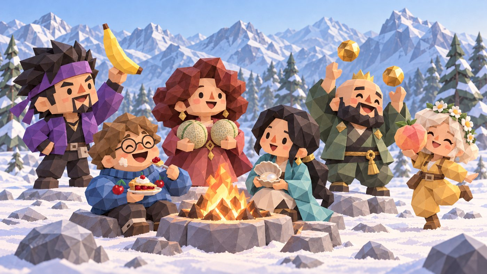

BDE理論学会
試験
結果
6つの型
講義ノート
試験を中断する
「やっと、自分の
ディックの大きさ
が
分かりました」
MBTIはもう要りません。
授業を受ける（無料）
58問・登録不要・無料

試験を受ける
己のディックを知る
乳首を出す
BDE理論 認定試験
1 / 5 ページ
0 / 58
戻る
次へ
6つの型
講義ノート
BKEは変換で貯まる
BDEとBCEを行き来するたび、マイルのように貯まる。
全員が全部持っている
男女の区別はなく、誰もが6つすべてを持つ。
命の燃やし方＝点の速さ
点が速く動くほど、命が燃えている。
元ネタ
雷獣
【永久保存版】ミスター自己啓発•コムドットやまとに、独自の人生論「BDE」を教えてあげよう
雷獣 ・ 2026年10月7日公開 ・ 1時間13分
関連書籍 やまと『命の燃やし方』
Amazon →
提唱者
ベ
ベテランち
YouTube「雷獣」メンバー
出席したすべての飲み会でこの理論を話していた。本人いわく「科学でございます」。
X @veteranchi
YouTube 雷獣